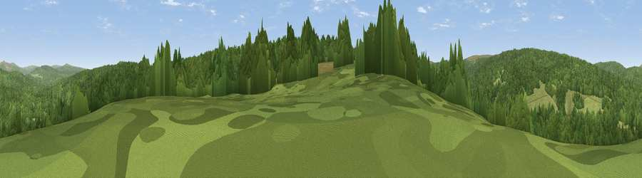

Viewpoint c11734_7243
#37977 in England · top 77% of its area beats it · —Where it is
The exact computed spot (NY 62175 86725). Click the marker for map links.
The view, rendered

A 360° render of this exact spot computed from the terrain model, tree cover and land cover — summer colours, afternoon light, calibrated against photographs of famous viewpoints. Real trees, hedges and buildings will differ in detail.
The panorama
Grey silhouette: terrain skyline in each direction (720 bearings, Earth curvature and refraction included). Dashed green: skyline with trees (+15 m) and buildings (+8 m) as obstacles. Blue strip: how far the ground is visible on each bearing.
Where the view opens
Wedge length = distance to the farthest visible ground on that bearing (vegetation-aware). Rings at 10, 25 and 50 km.
What fills the view
80% woodland · 20% grassland
Angular shares of the visible panorama (visual magnitude), not map area. Landscape diversity 0.22 (0–1 Shannon).
Key numbers
More beautiful places nearby
The staircase of upgrades: each row has a higher view potential than everything closer. Driving times are estimates from straight-line distance, calibrated against real road routing — check an actual route before setting out.
| Place | Direction | Drive | Score |
|---|---|---|---|
| Viewpoint c11756_7187 | WNW · 3 km | ~7 min | 70.1 |
| Viewpoint c11750_7179 | WNW · 3 km | ~8 min | 70.4 |
| Glendhu Hill | W · 5 km | ~12 min | 74.9 |
| Viewpoint c11644_7156 | SW · 6 km | ~13 min | 80.8 |
| Viewpoint c11995_7247 | N · 13 km | ~24 min | 82.1 |
| Viewpoint c12273_7856 | NE · 41 km | ~60 min | 83.7 |
| Viewpoint c12396_7887 | NE · 46 km | ~67 min | 85.7 |
| Viewpoint near Kirknewton | NE · 53 km | ~74 min | 86.1 |
55.17337, -2.59540 · source: screening · position refined by local search. Computed location — check access rights before visiting.